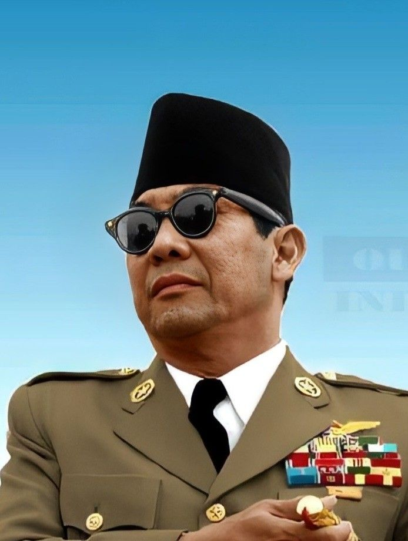

Soekarno
Soekarno, atau yang dikenal sebagai Bung Karno, adalah proklamator kemerdekaan Indonesia dan presiden pertama Republik Indonesia.
Lihat DetailRaden Ajeng Kartini
Raden Ajeng Kartini adalah pahlawan nasional yang dikenal sebagai pelopor kebangkitan perempuan pribumi di Indonesia.
Lihat Detail